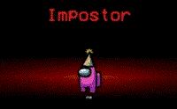

O seu estilo de jogo muda completamemte dependendo do qual o seu papel na nave, pois cada um dos tipos de papel, mas ha algo fundamental a qualuquer um deles: Dialogar, intergir com os outros jogadores para conseguir atingir seu objetivos
Sendo tanto um tripulante como um impostor é nescessario manter a coerencia em suas alegações e suas atitudes, pois nesse jogo falta de presisão ou credibilidade é o mesmo que ser derrota
Outro ponto importante é conseguir varias informações, informações que não são vistas em qualquer site ou lugar, mas a maioria não é capaz de as encontrar

O caminho do impostor... solitario e complicado, mas certamento o papel mais desafiador e divertido no jogo pelo menos no basico.
Bem vindo ao site sobre o jogo fenomeno: Among Us

Among Us é basicamente um jogo sobre ver olhar os jogadores do jogo para descobrir um impostor entre eles. Claro o jogo tambem tem como objetivo secundario as "tasks" ou "terefas" que ao completas o jogo é vencido (pelos tripulantes)
Mesmo com um primissa simples e em muito tambem por isso, o jogo se tornou uma fébre no mundo inteiro
Claro, não só de tripulantes vive uma espaço-nave, o jogo contava com um tipo de jogador que tinha um papel diferente do demais: O Impostor
O objetivo do impostor é ser o unico na nave, e ele fara de tudo para alcançar esse objetivo, seja sabotar a nave até ela colapsar ou matar todos os tripulandes um a um.